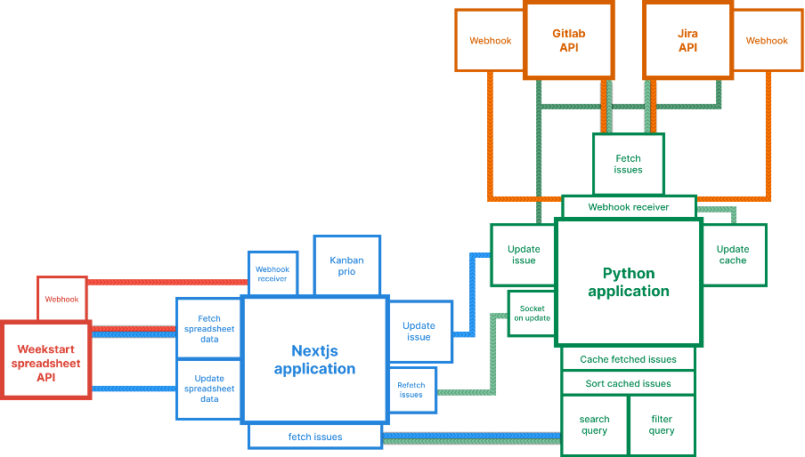
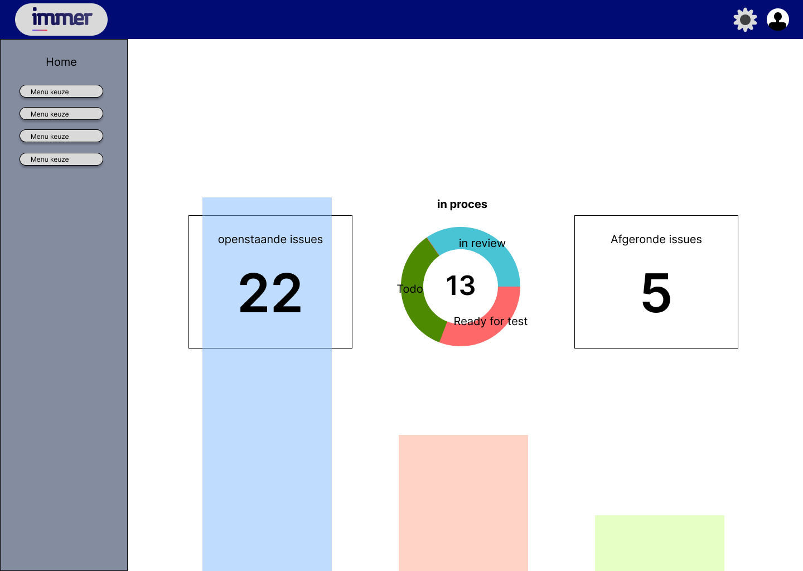
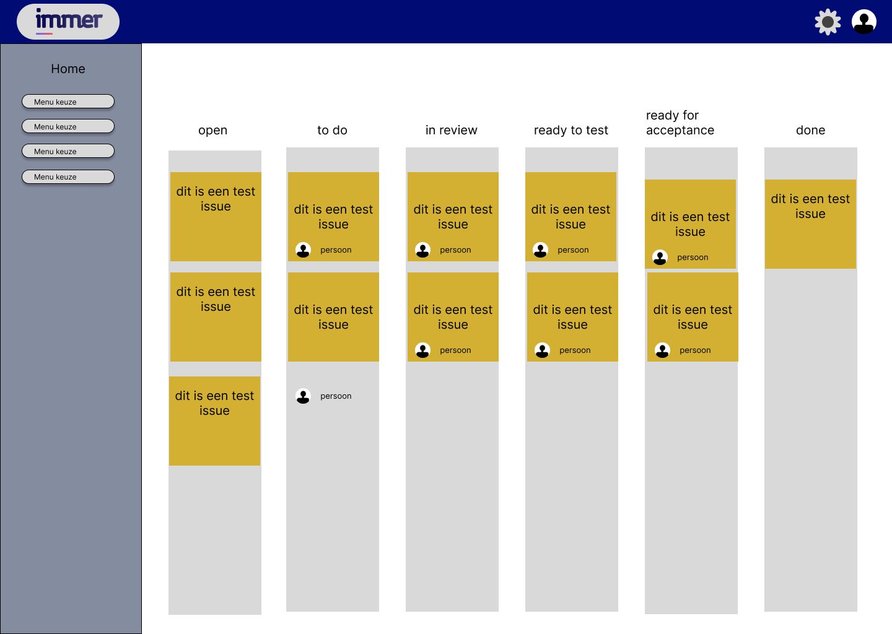
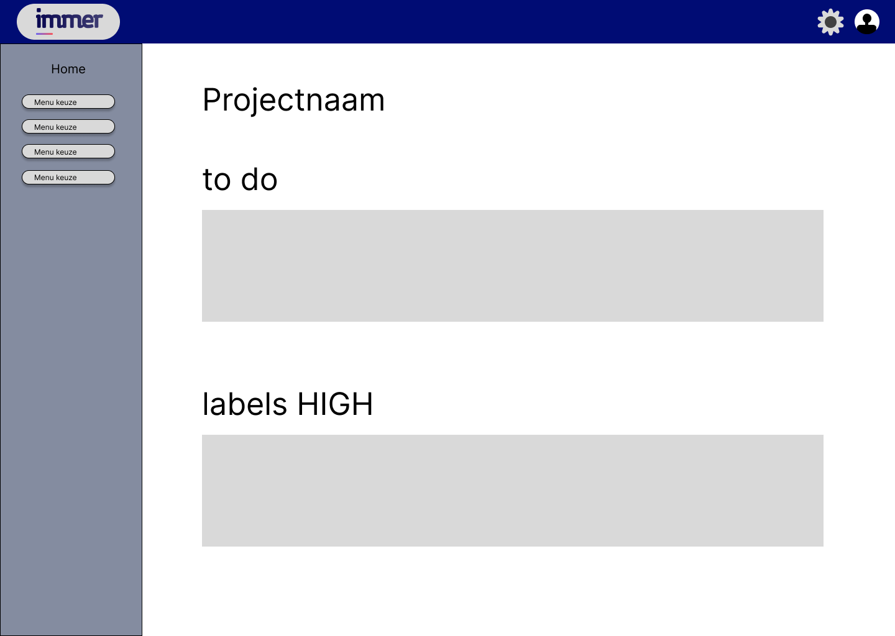
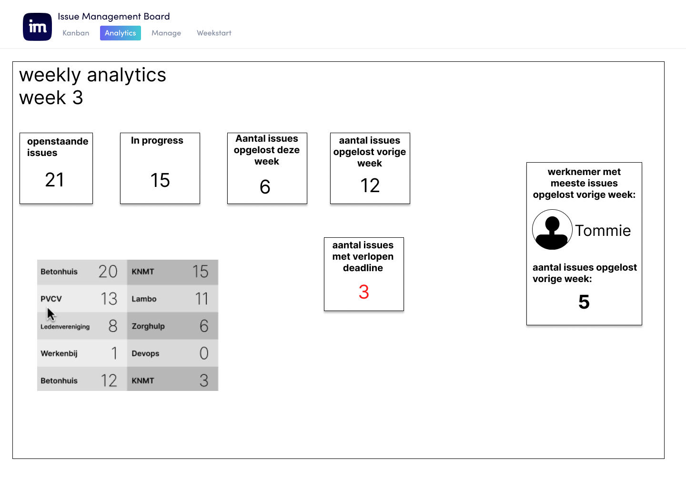
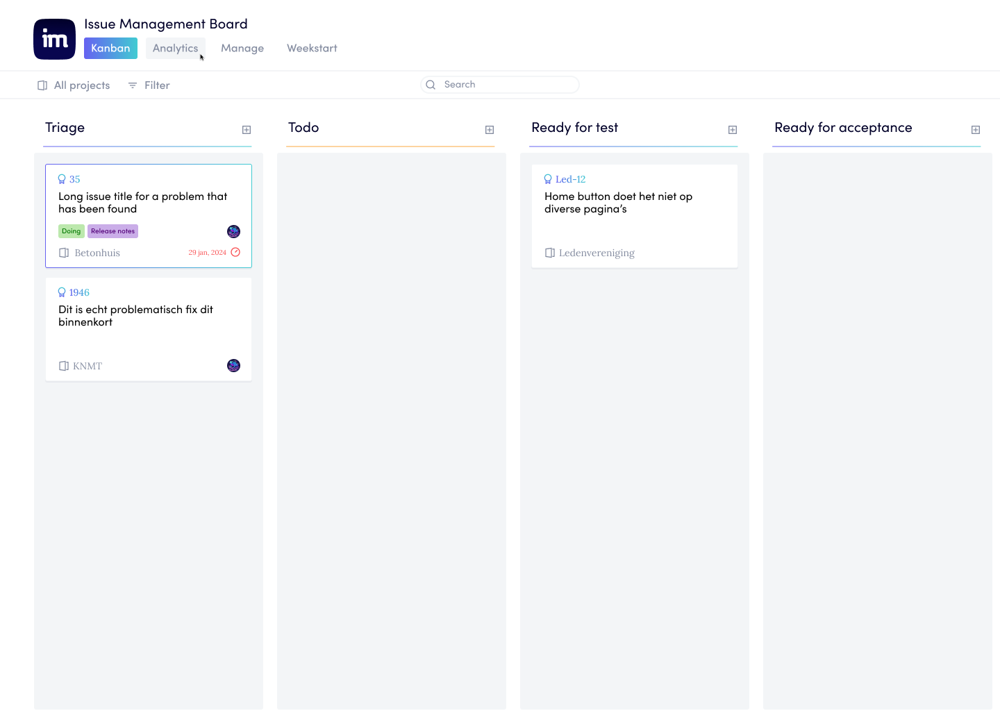
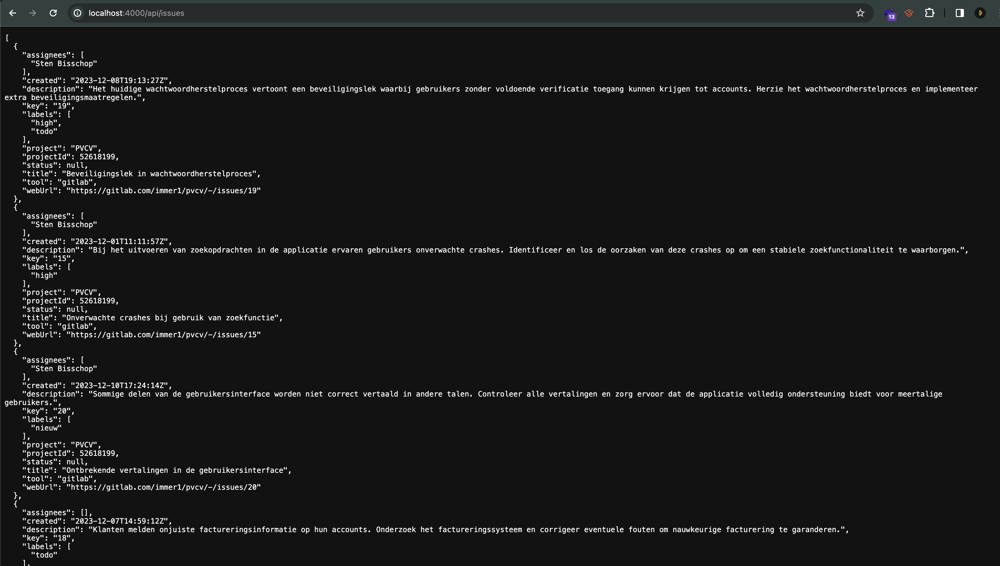

Introductie
Wij zijn de Xperts, een projectgroep bestaande uit Sten Bisschop (Communicatie Multimedia design), Abel Ketelaars (Zorgtechnologie), Sirat Khalili (Accounting) en Max Jonkman (Automotive Engineering). Wij doen dit project voor de hogeschool Utrecht de opleiding ICT voor niet ICT’ers. Voor dit project hebben we contact opgenomen met een organisatie waar een probleem of kans(en) ligt. Wij gaan hierop in spelen met het maken van een prototype en een advies rapport. Hiervoor maken we gebruik van de methode Design thinking.
Needs Value Capibility Mission

Vorming van de probleemstelling
Uit de analyse en interview van Immer is gekomen dat er een pijnpunt licht bij het issue afhandelen. In de huidige situatie is 1 werknemer verantwoordelijk voor het beheer van alle binnenkomende issues. Dit leidt ertoe dat de project manager veel tijd verdoet aan het achtervolgen van iedereen terwijl ondertussen de developers vaak niet goed geinformeerd zijn over de binnenkomende issues. Dit leidt tot enige frustratie en sommige issues blijven hierdoor lang blijven liggen (tot meer dan een jaar). Bovendien hebben de developers geen duidelijk beeld van de voortgang van elk project, waardoor ze vaak op hetzelfde project worden gezet. Dit maakt hun specialisten voor dit project maar minder flexibel inzetbaar en is voor de werknemers ook mogelijk eentonig en niet bevorderend in hun persoonlijke ontwikkeling. Na interviews met werknemers is het ook gewenst om op meerdere projecten te kunnen werken voor afwisseling en ontwikkeling.
Het probleem binnen Immer is het beheren van issues van alle projecten. Dit heeft invloed op de efficiëntie en effectiviteit en ontwikkeling van de werkprocessen, Dit effect trekt zich door tot de klant die soms lang kan wachten totdat de issue behandeld is.
De Ideate fase
Ideate ideeen:
Binnen de groep als samen met begeleiders op de HU en in samenwerking met Immer zijn de volgende ideeën naar voren gekomen.
- Fysieke scrum techniek toepassen, zodat iedereen meer op de hoogte blijft van de omgaande issues.
- Implementeer een geautomatiseerd meldingssysteem dat ontwikkelaars op de hoogte stelt van nieuwe issues en updates, waardoor de communicatie wordt verbeterd en de kans op gemiste problemen wordt verminderd.
- Een uitgebreider en geavanceerder issue managementsysteem kan een oplossing bieden voor dit specifieke probleem, wat zal bijdragen aan de verbetering van de algehele workflow en productiviteit binnen het bedrijf.
- Introduceer regelmatige korte stand-up meetings waarin elk teamlid snel de status van hun projecten en eventuele obstakels deelt. Dit bevordert de communicatie en helpt bij het identificeren van knelpunten.
- Ontwikkel een standaard proces voor het prioriteren van issues op basis van hun impact op klanten en bedrijfsdoelen. Dit zorgt ervoor dat de belangrijkste problemen als eerste worden aangepakt.
- Integreer machine learning en data analyse om trends in de issues te identificeren, waardoor proactief kan worden gereageerd op opkomende problemen en de algehele projectkwaliteit kan worden verbeterd.
- (Niet alleen een overall issue management systeem met AI / ML erin die data analyse doet maar ook een proces aanpassing en beschrijving voor het verbeteren van de flow zonder de werkdruk te verhogen)
- Het aantal kliks verkleinen van zowel klant als medewerker waardoor je met 1 applicatie meer overzicht krijgt en met behulp van plugins deze info gelijk kan doorzetten naar bijvoorbeeld programmas zoals jira
Gekozen Oplossing/Idee
Na een overleg met Immer hebben we als team besloten om te kiezen voor een uitgebreider en geavanceerder issue managementsysteem. Deze oplossing zorgt er namelijk voor dat de algehele workflow verbeterd wordt. Daarnaast zorgt deze oplossing er ook voor dat de productiviteit en efficiëntie binnen Immer fors toenemen.
Als gevolg van het implementeren van een uitgebreider en geavanceerder issue managementsysteem zullen de medewerkers beter op de hoogte zijn van de issues en zal degene die verantwoordelijk is voor het plannen en organiseren van projecten veel minder tijd kwijt zijn aan het achteraangaan van medewerkers. Deze kan dan namelijk makkelijk issues toewijzen. De medewerkers zelf zullen de toegewezen issues in hun geïntegreerde werkstaat kunnen zien en bewerken. De communicatie tussen het personeel wordt hierdoor ook duidelijker.
Onze applicatie

Python gedeelte
Deze applicatie biedt een eenvoudige integratie om issues uit GitLab en Jira op te halen, weer te geven en bij te werken. De backend is gebouwd met Flask en biedt endpoints voor webhooks, het ophalen van gesorteerde en gefilterde issues, en het bijwerken van issues.
wireframes



wireframe / design verbetering


Prototype
Data die ontvangen wordt door de python applicatie (alle Jira en Gitlab issues)
